MANALI
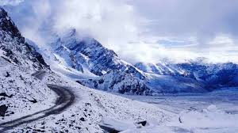
Manali situated at a height of 6260 feet above sea level, Manali is one of the most popular, beautiful and awe-inspiring hill stations in this country. Located at the banks of the Beas River, Kullu valley is home to the picturesque towns of Kullu and Manali. Due to their close proximity, they are often considered as a single destination. The valley is known for its amazing hills and the various temples and sight-seeing locations attract a huge number of visitors each year. The Kullu valley is surrounded by deodar and pine forests and is located between the lower and the greater Himalayan ranges as well as the inner Himalayan ranges of the Pir Panjal. Manali overwhelms its visitors by flowering apple trees and adventurous snow covered roads. This town also has a multitude of options for tourists looking for Adventurous Activities like Trekking, Paragliding, Skiing, Zorbing, White Water Rafting Etc
Best Time to Visit Kullu Manali:
Manali is a popular destination for scenic beauty, snow capped mountains, adventure activities, and beautiful gardens which is visited by travelers all throughout the year. The weather remains pleasant throughout the year. So, Manali can be visited during both winters and summers, depending on one's preference.
Monsoon comes with heavy rainfall which commonly results in severe road damage and landslides and thus must be avoided.
APPROACH
Rail: Nearest convenient rail head are at Chandigarh (300Km) and Pathankot (315Km). Manali can be reached from road from these stations.
Road: Manali is well connected by road with Delhi, Ambala, Chandigarh, Dehradun, Haridwar, Shimla, Dharamsala and Chamba/Dalhousie. It is connected with Leh during July to October.
Distances from Manali
|
|
1.ROHTANG PASS
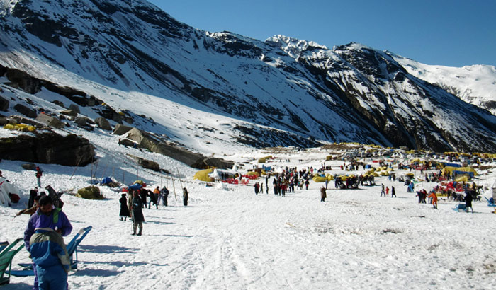
The high mountain pass of Rohtang lies at an altitude of 3,978 meters above sea level and located in the eastern hills of the Pir Panjal Range. The pass lies at a picturesque location with the rivers Beas and Chenab that lies to the southern and northern side of Rohtang Pass. Rohtang Pass is famous for its picturesque views of the valley and various hidden waterfalls. Rohtang Pass is a must visit on your trip Kullu-Manali.
2.HADIMBA TEMPLE
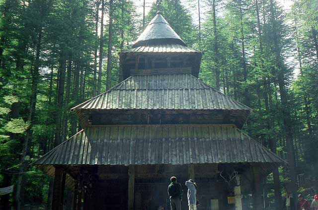
Situated atop a hillock the Hidimba Devi Temple is surrounded by thick deodar forests and was built in 1553. The temple is dedicated to the Rakshasa Hidimba who was also the wife of the Pandava Bhima. The temple structure is built in a distinctive architectural style that somewhat crosses Indian architecture with the one employed in the Buddhist monasteries. The structure is made primarily of wood and 70 meters from the temple also lays the temple dedicated to Ghatotkacha, the son of Bhima and Hidimba and a hero of the Mahabharatha war.
3.VASHIST HOT WATER SPRINGS
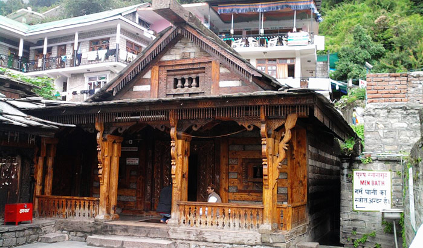
The place lies at a distance of 4-5 kilometers from Manali and is situated across the Beas River. The village of Vashist is famous for its sulphurous Hot Water Springs and is a popular attraction among tourist and pilgrims. The springs can also be enjoyed in privacy at the Turkish-styles bath houses which are available here. The village is also famous for its stone temples which are dedicated to a local saint Vashishta.
4.SOLANG VALLEY
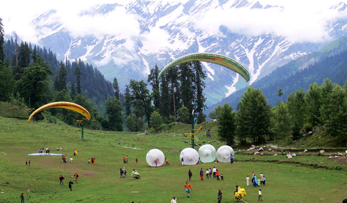
Solang valley is also known as the ‘Snow Point’ and is famous for hosting various winter adventure sports like skiing, parachuting and paragliding etc. The Solang Valley is located at an average altitude of 2,560 meters above sea level and is also one of the favorite trekking hotspots in the region. The views from the point are magnificent and give views to snow capped peaks and glaciers.
TIBET MONASTERY (GADHAN THEKCHHOKLING GOMPA)
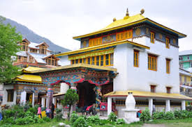
Also known as the Manali Gompa, Gadhan Thekchhokling Gompa is one of the most famous tourist attractions in Manali. Built in 1960's by the Tibetan refugees; this monastery is known for its large statue of Lord Buddha, wall paintings, and Chortens. This monastery serves as an important gathering point for Buddhists from Spiti, Lahaul, Nepal, Tibet, and Kinnaur.
VAN VIHAR,
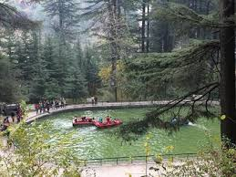
The Van Vihar is a haven for nature lovers and avifauna enthusiasts, Its Situate heart of the city Nr Mall Road & Bus Stand. The Van Vihar National Park is a park run and maintained by the municipal corporation of the city. This beautiful garden is a popular and frequently visited destination for children and adults alike. The favorite attraction of this park is a sparkling man-made lake that rests in the middle of the lush green landscape and brings the entire vicinity to life, Boating on the placid waters of this lake
SURROUNDING MAJOR ATTRACTION :
MANIKARAN
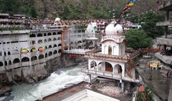
Located 85 kilometers from Manali, Manikaran is a sacred town for both Sikhs and Hindus. It is a popular pilgrimage destination having many Temples and Gurudwaras. It is famous for its Hot Springs, which are considered to be sacred and have curative properties. According to Hindu mythology, Shiva and Parvati decided stayed here for some time. They stayed for over a millennium and during that a jewel from Goddess Parvati’s earring fell into the river. From this legend, the place got its name. The place is famous for its Manikaran Gurudwara Sahib, associated with Guru Nanak - the founder of Sikhism. The Gurudwara has a langar that offers free food to the pilgrims. There is also a temple that is dedicated to Lord Shiva and Ramchandra along with other places of worship in Manikaran. There is a small market outside the temples and Gurudwara
BEAS RIVER
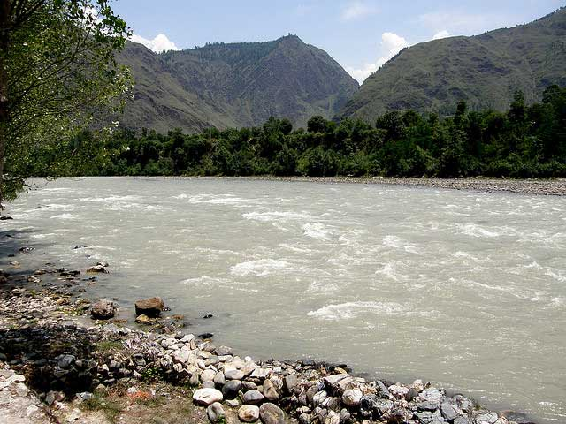
Beas River is often described as the Heart of Kullu valley and is known for its various camping spots and water sports. The river also marks the eastern border of Alexander the Great’s empire in 326 BC. The flow of the river is very fast and is not fit for swimming, but is the perfect for Rafting. The shores of the Beas are famous picnic spots and the best place to relax during the evenings.
VAISHNO DEVI TEMPLE IN KULLU
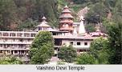
Now this place will give you the feel of a ‘Mini Vaishno Devi’, Commonly known as Mahadevi Tirth, Vaishno Devi temple in Kullu is situated on the banks of Beas River and is 2 km from the beautiful town of Kullu, right on the way to Manali. Named after the wife of Lord Shiva, Parvati, the magnificent temple was built in the year 1966 by a saint named Swami Sewak Das Ji Maharaj. The main temple that appears like a cave is beautifully carved inside with life facility. But visitors are required to crawl inside it. Be ready to get smitten by the sprawling forests, apple orchards and majestic hills that happen to appear on your way.
OTHER TOURIST DESTINATION
MANU MAHARISHI TEMPLE
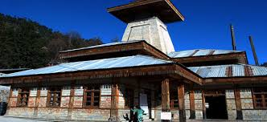
Located in the Old Manali region, the Manu Maharishi Temple is considered very sacred by the people of the town. The temple is dedicated to Rishi Manu, the great sage. According to Hindu mythology, Manu is the originator of the human race. Mythology says that he saved the Vedas and the seven sages from the flood. It is believed that after the great flood, Manu landed at Manali and then lived here. The temple attracts tourist from different parts of the world, due to the fact it is the only existing temple dedicated to Manu
KOTHI
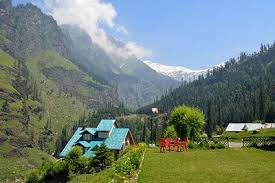
This is a quiet but picturesque spot, at the foot of the Rohtang pass, just 12 km away Manali town, situated on the Lahaul-Spiti Leh Highway. It offers a magnificent view of the snow-capped peaks and glaciers and an awe inspiring gorge where the Beas enters a chasm about sixty meters deep and just a few meters broad. Kothi used to be a camping site when Rohtang pass had to be climbed on foot.
NEHRU KUND
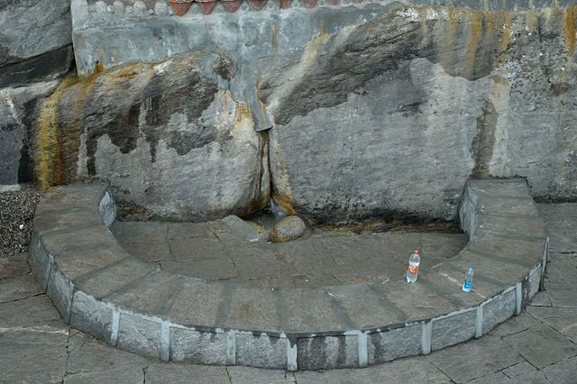
Nehru Kund refers to a natural cold water spring that originates from the Brighu River. The springs are located 5 Kilometers from Manali on the national highway to Leh towards Keylong. The place is named after Pt. Jawaharlal Nehru who was said to drink from this very spring whenever he visited Manali. The place is a serene and beautiful picnic spot which is sure to refresh your senses.
NAGGAR CASTLE
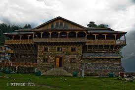
Located 21 kilometers from Manali, Now a Heritage Hotel, the medieval Naggar Castle was built by Raja Sidh Singh of Kullu around 1460 A.D. Run by Himachal Pradesh Tourism Development Corporation, Naggar Castle is still a visitors’ favorite because of the breathtaking view of the forested hills of the Beas Valley.
JANA WATERFALLS
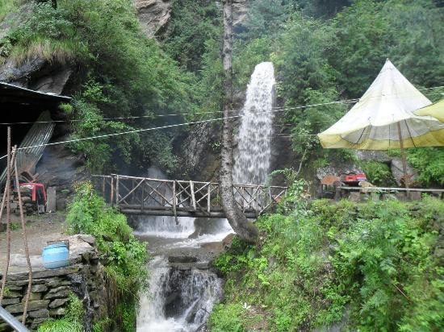
Located 34 kilometers from Manali & 12Km from Naggar, Jana Waterfall is a hidden gem of Naggar in Kullu region. The area is laden with colorful apple orchids, surrounded by remarkable deodar trees and the breathtaking view of distant snow-capped mountains. The water rushes from a cluster of rocks and overlooks an old wooden bridge. If you climb a little further up, you may get a better view of the waterfall and some quiet picnic spots.
KASOL
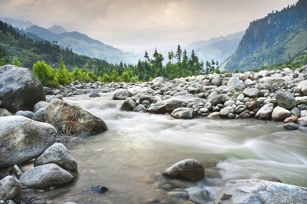
Kasol is a hamlet in the district Kullu (37Km), on the way Bhuntar (31Km) to Manikaran (5Km) It is situated in Parvati Valley, on the banks of the Parvati River. Kasol is the Himalayan hotspot for backpackers. It acts as a base for nearby treks to Malana and Kheerganga.
KHEERGANGA TREK, KASOL OVERVIEW
Kheer Ganga (3050 meters) lies at the extreme end of Parvati valley and the last inhibited village while trekking to pin valley via Pin-Parvati pass. Kheerganga's panoramic skies and vast greenery are a much-needed delight to the trekker's eyes and especially the tired legs. It is a holy place with a hot water spring, a small temple of Lord Shiva and a bathing tank. It makes a rare combination for any trekker to bath in hot spring water when everything is covered by snow.
BIJLI MAHADEV TEMPLE
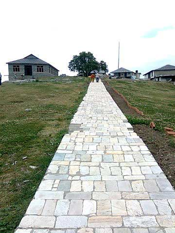
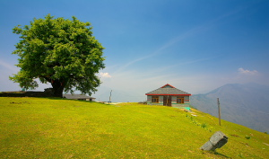
Located 22 km from Kullu across the Beas river, it can be approached by a rewarding trek of 5 km, at an altitude of 2,460 meters above sea level, Bijli Mahadev Temple is dedicated to the Hindu deity Lord Shiva and refers to the 60 feet high lighting rod that is situated in the temple and is struck by lightning throughout the year.
This place is full of mystery and miracles. The name comes from the fact that, the lightening (Bijli) strikes the Shiva linga inside the temple and breaks into pieces. The Shiva ling (Mahadev) will be joined together and installed in a special occasion using a locally made adhesive. A panoramic view of Kullu and Paravati valleys can be seen from the temple.
BASHESHWAR MAHADEV TEMPLE
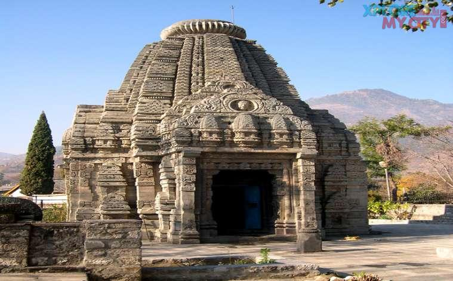
Located at a distance of 15 kilometers from Kullu at a small village called Bajura, Bhasheswar Mahadev Temple is dedicated to the Hindu deity lord Shiva. The temple was constructed back in the 9th century AD and is famous for its intricate stone carvings and various small idols of the Hindu deities like Lord Vishnu, Ganesha, Durga and Laxmi.
🏔️ Day Trips & Nearby Attractions
Rohtang Pass (51 km; open May–Nov)
Snow adventures and breathtaking views of glaciers and peaks.
Requires a permit; highly popular.
Atal Tunnel
World's longest highway tunnel above 10,000 feet.
Connects Manali to Lahaul Valley; scenic drive.
Sissu (via Atal Tunnel) (40 km)
Gorgeous lake, waterfall, and mountain views in the Lahaul region.
Ideal for a peaceful mountain retreat.
Kullu (40 km)
Famous for rafting in the Beas River, shawl factories, and Dussehra celebrations.
Naggar Castle (20 km)
Historic castle turned heritage hotel, offering stunning views.
Nearby Nicholas Roerich Art Gallery showcases Russian painter’s work.
Hamta Pass (Trek Start Point: Jobra)
Popular high-altitude trek connecting Kullu and Lahaul valleys.
Suitable for beginners with lush landscapes and glacial scenery.
Bhrigu Lake (Trek Start: Gulaba)
Trek to a high-altitude alpine lake, known for changing colors.
1–2 day trek depending on fitness level.